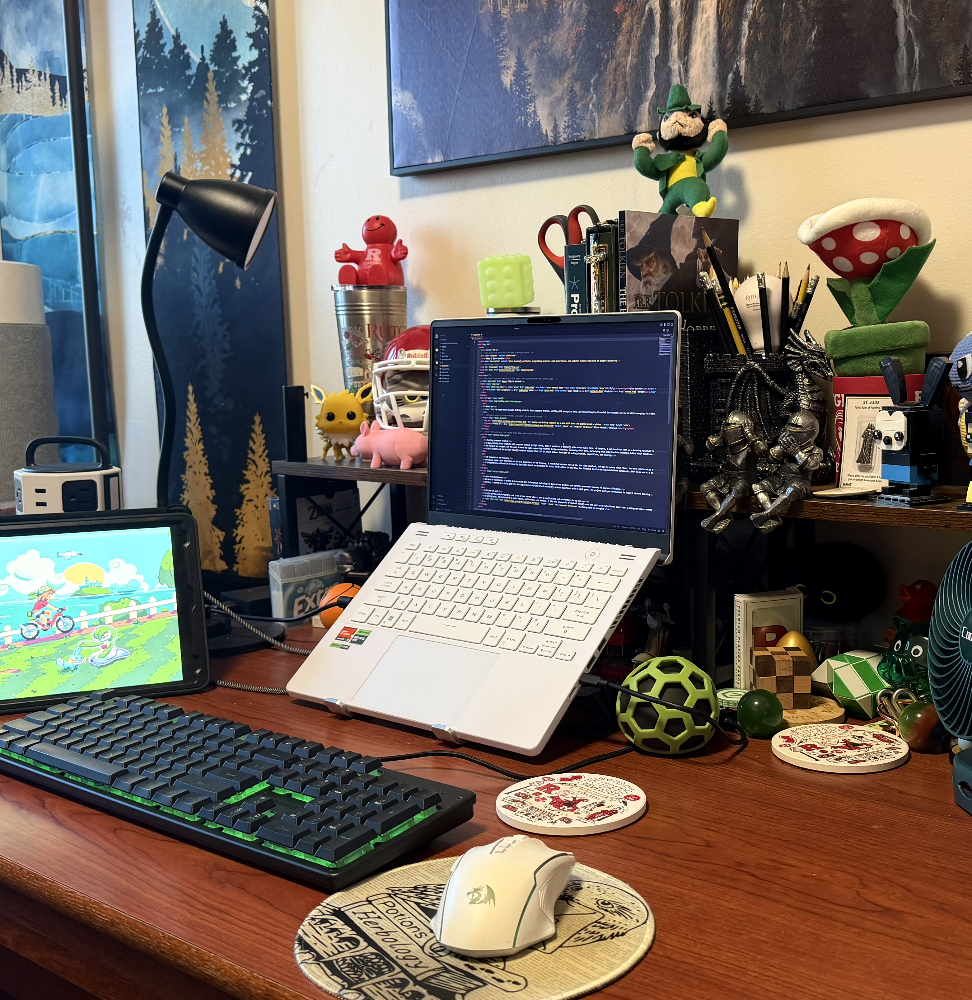

About me
My experience includes helping students learn computer science, working with enterprise data, and researching how financial institutions can use AI while managing its risks.
My workspace
A short tour of my desk at Rutgers, how I use my devices together, and some of the interests represented around it.
Read transcript
Lightly edited for readability.
This photo is of my workspace in my apartment at Rutgers University. I spend most of my time here, whether I'm working on assignments, developing personal projects, or gaming in my free time.
My main computer is my laptop, which I use with an external keyboard and mouse. I also use my iPad as a second screen, usually to watch videos while I'm working on something else. I've set it up so the audio plays through my laptop over Bluetooth, allowing me to use the same headphones for both devices.
I've decorated my desk with books, collectibles, and memorabilia from some of my favorite games and movies, including The Lord of the Rings and Pokémon.
I've arranged everything to make the space very comfortable and practical for both work and entertainment, and just looking at a bunch of my interests outside of computer science.

Teaching computer science
I began helping other students with computer science in high school, where I worked as a teacher’s aide and in-class tutor. At Rutgers, I continued that work as a Learning Assistant for Data Structures in fall 2025. I now hold the same part-time role for Introduction to Computer Science.
The subject has changed, but the work is much the same: supporting students during recitations, reviewing their work, and helping them understand the reasoning behind their solutions.
I also founded and led my high school’s Computer Science Club. Its 25 active members took part in coding projects, competitions, and tutoring.
AI research at the Treasury
During my summer 2026 internship at the U.S. Department of the Treasury, I researched business uses of AI, the risks involved, and ways to reduce those risks. The work reinforced my view that businesses should make use of AI while keeping those risks as low as possible.
I independently authored an AI Security Spotlight Report and presented it twice: first online to more than 340 financial institution representatives nationwide, then in person at a joint FBIIC-FSSCC meeting.
Recommended video (temporary)
I’d recommend this CodeAesthetic video to students who already know the basics but want to make their code easier to follow. It shows how to cut down on excessive nesting without changing what the code does.
I’ll replace this with a video of me teaching recursion.
Why You Shouldn't Nest Your Code
By CodeAesthetic
Creator's correction: at 2:20, the inverted condition should use “less than or equal,” rather than “less than.”
Data and development
At Banc of California, I worked in Enterprise Data Information Technology on data-driven projects and workflow processes intended to improve efficiency.
Earlier, I worked on a Unity game for the Laguna Beach Unified School District’s Science Department with IC 2020 games. The project used game development to support student learning.
Outside of work
I enjoy gaming and photography, and I run a home server where I set up applications and automations for my own use.
In photography, I’m interested in quiet spaces, reflections, and shadows. I like the atmosphere of Michael Kenna’s work and want to be intentional about what a photograph makes someone notice.
These are some of my photos from around campus and while traveling.